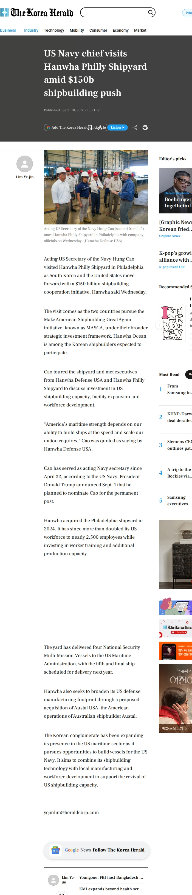

Reporting archive / The Korea Herald
US Navy chief visits Hanwha Philly Shipyard amid $150b shipbuilding push

The image capture is unavailable. The article text is preserved below.
Read preserved article text
Acting US Secretary of the Navy Hung Cao visited Hanwha Philly Shipyard in Philadelphia as South Korea and the United States move forward with a $150 billion shipbuilding cooperation initiative, Hanwha said Wednesday.
The visit comes as the two countries pursue the Make American Shipbuilding Great Again initiative, known as MASGA, under their broader strategic investment framework. Hanwha Ocean is among the Korean shipbuilders expected to participate.
Cao toured the shipyard and met executives from Hanwha Defense USA and Hanwha Philly Shipyard to discuss investment in US shipbuilding capacity, facility expansion and workforce development.
“America’s maritime strength depends on our ability to build ships at the speed and scale our nation requires,” Cao was quoted as saying by Hanwha Defense USA.
Cao has served as acting Navy secretary since April 22, according to the US Navy. President Donald Trump announced Sept. 1 that he planned to nominate Cao for the permanent post.
Hanwha acquired the Philadelphia shipyard in 2024. It has since more than doubled its US workforce to nearly 2,500 employees while investing in worker training and additional production capacity.
The yard has delivered four National Security Multi-Mission Vessels to the US Maritime Administration, with the fifth and final ship scheduled for delivery next year.
Hanwha also seeks to broaden its US defense manufacturing footprint through a proposed acquisition of Austal USA, the American operations of Australian shipbuilder Austal.
The Korean conglomerate has been expanding its presence in the US maritime sector as it pursues opportunities to build vessels for the US Navy. It aims to combine its shipbuilding technology with local manufacturing and workforce development to support the revival of US shipbuilding capacity.
yejinlim@heraldcorp.com